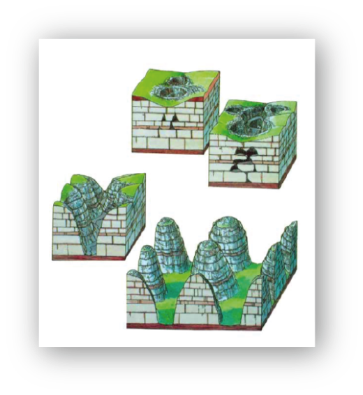

Batuan karst menjadi daya tarik dari Stone Garden. Bentuk dan tekstur yang juga beragam. Batuan karst dalam Stone Garden telah terbentuk dari zaman Miosen Awal, sekitar 27 juta-15 juta tahun yang lalu. Batuan ini merupakan hasil pengangkatan kerak bumi disertai air hujan yang secara berkala membentuk permukaan menjadi pilar-pilar yang kokoh.
Sebelum menjadi karst, batuan ini merupaka terumbu karang yang terdapat di dalam lautan dangkal, cikal bakal Kota Bandung. Batu kapur itu merupakan batuan endapan yang terdiri atas kalsium karbonat (CaCO3), yang mudah larut dalam air yang mengandung CO2, yang terdapat di semua perairan permukaan. Reaksi kimianya: H2O (air) + CO2 (karbon dioksida) + CaCO3 (kalsium karbonat) = Ca(HCO3)2 (kalsium bikarbonat).
Batuan karst menjadi daya tarik dari Stone Garden. Bentuk dan tekstur yang juga beragam. Batuan karst dalam Stone Garden telah terbentuk dari zaman Miosen Awal, sekitar 27 juta-15 juta tahun yang lalu. Batuan ini merupakan hasil pengangkatan kerak bumi disertai air hujan yang secara berkala membentuk permukaan menjadi pilar-pilar yang kokoh.